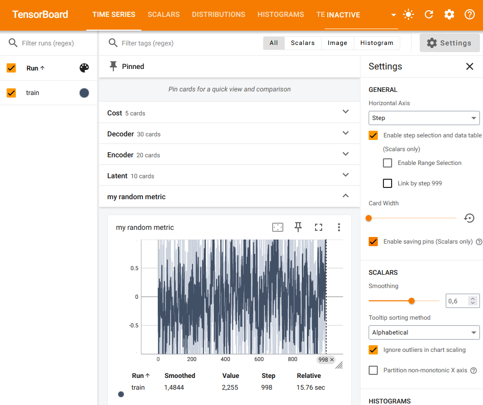

Logging Custom Scalars#
Run this notebook on Google Colab:

Find the documentation of EncoderMap:
https://ag-peter.github.io/encodermap
For Google colab only:#
If you’re on Google colab, please uncomment these lines and install EncoderMap.
[1]:
# !wget https://raw.githubusercontent.com/AG-Peter/encodermap/main/tutorials/install_encodermap_google_colab.sh
# !sudo bash install_encodermap_google_colab.sh
Primer#
In this tutorial we will explore 2 different ways of logging custom scalars or custom data to tensorboard using EncoderMap and its codebase. First let us start with the required imports:
[2]:
import encodermap as em
import tensorflow as tf
import numpy as np
import pandas as pd
---------------------------------------------------------------------------
ModuleNotFoundError Traceback (most recent call last)
Cell In[2], line 1
----> 1 import encodermap as em
2 import tensorflow as tf
3 import numpy as np
File /opt/hostedtoolcache/Python/3.9.16/x64/lib/python3.9/site-packages/encodermap/__init__.py:94
88 ################################################################################
89 # Imports
90 ################################################################################
93 from encodermap._version import __version__
---> 94 from encodermap.autoencoder.autoencoder import (
95 AngleDihedralCartesianEncoderMap,
96 Autoencoder,
97 EncoderMap,
98 )
99 from encodermap.callbacks.callbacks import EncoderMapBaseCallback
100 from encodermap.loading import features
ModuleNotFoundError: No module named 'encodermap.autoencoder'
Subclassing a model and adding tf.summary#
Idea: Log different auto_cost_variants to tensorboard and see how they compare.
EncoderMap’s auto_cost() function compares the input and output of the autoencoder. The greater the difference the higher the returned loss. The next code fragment is taken from EncoderMap’s code.
def auto_cost_function(y_true, y_pred=None):
if y_pred is None:
y_pred = model(y_true)
if p.auto_cost_scale is not None:
if p.auto_cost_variant == "mean_square":
auto_cost = tf.reduce_mean(
tf.square(periodic_distance(y_true, y_pred, p.periodicity)))
elif p.auto_cost_variant == "mean_abs":
auto_cost = tf.reduce_mean(
tf.abs(periodic_distance(y_true, y_pred, p.periodicity)))
elif p.auto_cost_variant == "mean_norm":
auto_cost = tf.reduce_mean(
tf.norm(periodic_distance(y_true, y_pred, p.periodicity), axis=1))
else:
raise ValueError("auto_cost_variant {} not available".format(p.auto_cost_variant))
if p.auto_cost_scale != 0:
auto_cost *= p.auto_cost_scale
else:
auto_cost = 0
tf.cond(write_bool, true_fn=lambda: _summary_cost('Auto Cost', auto_cost),
false_fn=lambda: _do_nothing(), name="Cost")
This loss takes the model input (y_true) and the model output (y_predict). If y_pred is not provided it will be created by calling the model y_pred = model(y_true). Then, there are three ways of calculating the loss. They all differ in the way the mean is calculated. We have:
mean_square
mean_abs
mean_norm
However, all of them are called on the output of a function called periodic_distance(). This function calculates the pairwise distances of all points, while recognizing periodicity. Pairwise distances of two sets of \(n\) points yield a \(n \times n\) matrix. The dimensionality of the points does not matter. Distance between two points in \(\mathbb{R}^\mathbb{N}\) space is just a scalar. Some data can lie in a periodic space (or a hypertoroidal manifold, if you’re a
mathematician). If the distances are greater than the provided periodicity they are wrapped around in periodic space. This means if you provide angles as y_true, they will be in the interval [\(-\pi\), \(\pi\)] and the distance between \(-\frac{\pi}{4}\) and \(\frac{\pi}{4}\) is not \(\frac{3\pi}{2}\), but rather \(\frac{\pi}{2}\), because the space wraps around with periodicty \(2\pi\).
Only ever one of the different means is used as a loss. The other ones are never even calculated.
We will now use the auto_cost() mean_abs variant to train our NN model, but we will log all three losses to tensorboard. First of all we will use the SequentialModel provided by EncoderMap. This sequential model will create a simple Autoencoder network from the specifications in EncoderMap’s Parameter class and the input. We will use the dihedral data from asp7.csv for this task.
Getting input data#
We’ll use pandas to read the .csv file.
[3]:
df = pd.read_csv('asp7.csv')
dihedrals = df.iloc[:,:-1].values.astype(np.float32)
cluster_ids = df.iloc[:,-1].values
print(dihedrals.shape, cluster_ids.shape)
print(df.shape)
---------------------------------------------------------------------------
NameError Traceback (most recent call last)
Cell In[3], line 1
----> 1 df = pd.read_csv('asp7.csv')
2 dihedrals = df.iloc[:,:-1].values.astype(np.float32)
3 cluster_ids = df.iloc[:,-1].values
NameError: name 'pd' is not defined
Setting parameters#
Because we will use dihedrals mapped onto the range [-pi, pi], we will use a periodicity of 2*pi. Also: Don’t forget to turn tensorboard True.
[4]:
parameters = em.Parameters(
tensorboard=True,
periodicity=2*np.pi,
n_steps=100,
main_path=em.misc.run_path('runs/custom_scalars')
)
---------------------------------------------------------------------------
NameError Traceback (most recent call last)
Cell In[4], line 1
----> 1 parameters = em.Parameters(
2 tensorboard=True,
3 periodicity=2*np.pi,
4 n_steps=100,
5 main_path=em.misc.run_path('runs/custom_scalars')
6 )
NameError: name 'em' is not defined
Subclassing the SequentialModel#
We create a new class inheriting form EncoderMap’s SequentialModel and call it MyModel. We don’t even need an __init__() method. Everything will be kept the same, we will just change stuff around in the method train_step().
The SequentialModel class wants two inpts: The input-shape and the parameters which will be used to deal with periodicity.
[5]:
class MyModel(em.models.models.SequentialModel):
pass
my_model = MyModel(dihedrals.shape[1], parameters)
print(my_model)
---------------------------------------------------------------------------
NameError Traceback (most recent call last)
Cell In[5], line 1
----> 1 class MyModel(em.models.models.SequentialModel):
2 pass
4 my_model = MyModel(dihedrals.shape[1], parameters)
NameError: name 'em' is not defined
Due to class inheritance the MyModel class can access the provided parameters as an instance variable called p.
[6]:
print(my_model.p)
---------------------------------------------------------------------------
NameError Traceback (most recent call last)
Cell In[6], line 1
----> 1 print(my_model.p)
NameError: name 'my_model' is not defined
Changing what happens in a training step#
Now we ill change what happens in a training step. We will simply call the parent’s class train_step() function and add our custom code. Our custom code will be added inbetween the two lines reading:
parent_class_out = super().train_step(data)
return parent_class_out
The train_step() method takes besides the usual self instance, an argument called data. That is a batched input to the model. After every training step, a new batch will be randomly selected and shuffled from the input dataset to ensure the model reaches a good degree of generalization. We will use this input and call the model on that to get the model’s output: self(data). The input and output can now be compared similarly to the auto_loss() function. We still need one piece to
do this. We will import the periodic_distance() function from encodermap and use it as is.
After these values have been calculated we can write them to tensorboard using the tf.summary.scalar() function. We will group them all into a common namespace called Comparison_Auto_Cost.
The last thing we need to talk about: The usage of data[0]. This is because Tensorflow generally assumes a classification task, where data[0] is the train data and data[1] is the train labels. Because we are doing a regression task, we will not use the second part of data. The train_step() method of the parent class also does something similar:
def train_step(self, data):
"""Overwrites the normal train_step. What is different?
Not much. Even the provided data is expected to be a tuple of (data, classes) (x, y) in classification tasks.
The data is unpacked and y is discarded, because the Autoencoder Model is a regression task.
Args:
data (tuple): The (x, y) data of this train step.
"""
x, _ = data
[7]:
from encodermap.misc.distances import periodic_distance
class MyModel(em.models.models.SequentialModel):
def train_step(self, data):
parent_class_out = super().train_step(data)
# call the model on input
out = self.call(data[0])
# calculate periodic distance with instance variable self.p containing parameters
p_dists = periodic_distance(data[0], out, self.p.periodicity)
# use the different norms
mean_square = tf.reduce_mean(tf.square(p_dists))
mean_abs = tf.reduce_mean(tf.abs(p_dists))
mean_norm = tf.reduce_mean(tf.norm(p_dists, axis=1))
# write the values to tensorboard
with tf.name_scope('Comparison_Auto_Cost'):
tf.summary.scalar('Mean Square', mean_square)
tf.summary.scalar('Mean Abs', mean_abs)
tf.summary.scalar('Mean Norm', mean_norm)
# return the output of the parent's class train_step() function.
return parent_class_out
my_model = MyModel(dihedrals.shape[1], parameters)
---------------------------------------------------------------------------
ModuleNotFoundError Traceback (most recent call last)
Cell In[7], line 1
----> 1 from encodermap.misc.distances import periodic_distance
3 class MyModel(em.models.models.SequentialModel):
4 def train_step(self, data):
File /opt/hostedtoolcache/Python/3.9.16/x64/lib/python3.9/site-packages/encodermap/__init__.py:94
88 ################################################################################
89 # Imports
90 ################################################################################
93 from encodermap._version import __version__
---> 94 from encodermap.autoencoder.autoencoder import (
95 AngleDihedralCartesianEncoderMap,
96 Autoencoder,
97 EncoderMap,
98 )
99 from encodermap.callbacks.callbacks import EncoderMapBaseCallback
100 from encodermap.loading import features
ModuleNotFoundError: No module named 'encodermap.autoencoder'
Running EncoderMap with the new model#
How do we train the model? We provide an instance of our custom model to EncoderMap’s EncoderMap class and let it handle the rest for us.
Also make sure to execute tensorboard in the correct directory:
$ tensorboard --logdir . --reload_multifile True
If you’re on Google colab, you can use tensorboard, by activating the tensorboard extension:
[8]:
# %load_ext tensorboard
# %tensorboard --logdir .
[9]:
e_map = em.EncoderMap(parameters, dihedrals, model=my_model)
---------------------------------------------------------------------------
NameError Traceback (most recent call last)
Cell In[9], line 1
----> 1 e_map = em.EncoderMap(parameters, dihedrals, model=my_model)
NameError: name 'em' is not defined
[10]:
e_map.train()
---------------------------------------------------------------------------
NameError Traceback (most recent call last)
Cell In[10], line 1
----> 1 e_map.train()
NameError: name 'e_map' is not defined
Here’s what Tensorboard should put out:

Second way: Writing custom metrics.#
A metric that is used to judge how well your model performs. In contrast to losses metrics are not actively minimized during training. Metrics often involve more complex calculations and are not carried out for every training step.
Let us write an RMSD-mertric that computes the RMSD between the input and output of the AngleDihedralCartesianEncoderMap.
The RMSD between a set of coordinates is defined as:
[11]:
import mdtraj as md
help(md.rmsd)
Help on built-in function rmsd in module mdtraj._rmsd:
rmsd(...)
rmsd(target, reference, frame=0, atom_indices=None, parallel=True, precentered=False)
Compute RMSD of all conformations in target to a reference conformation.
Note, this will center the conformations in place.
Parameters
----------
target : md.Trajectory
For each conformation in this trajectory, compute the RMSD to
a particular 'reference' conformation in another trajectory
object.
reference : md.Trajectory
The object containing the reference conformation to measure distances
to.
frame : int, default=0
The index of the conformation in `reference` to measure
distances to.
atom_indices : array_like, or None
The indices of the atoms to use in the RMSD calculation. If not
supplied, all atoms will be used.
ref_atom_indices : array_like, or None
Use these indices for the reference trajectory. If not supplied,
the atom indices will be the same as those for target.
parallel : bool
Use OpenMP to calculate each of the RMSDs in parallel over
multiple cores.
precentered : bool, default=False
Assume that the conformations are already centered at the origin, and that
the "rmsd_traces" have been computed, as is done by
`Trajectory.center_coordinates`. The "rmsd_traces" are intermediate
calculations needed for the RMSD calculation which can be computed
independently on each trajectory. Note that this has the potential to
be unsafe; if you use Trajectory.center_coordinates and then modify
the trajectory's coordinates, the center and traces will be out of
date and the RMSDs will be incorrect.
Examples
--------
>>> import mdtraj as md # doctest: +SKIP
>>> rmsds = md.rmsd(trajectory, trajectory, 0) # doctest: +SKIP
>>> print rmsds # doctest: +SKIP
array([ 0.0, 0.03076187, 0.02549562, ..., 0.06230228,
0.00666826, 0.24364147])
The calculation is slightly faster if you precenter the trajectory
>>> trajectory.center_coordinates()
>>> rmsds = md.rmsd(trajectory, trajectory, 0, precentered=True)
See Also
--------
Trajectory.center_coordinates
Notes
-----
This function uses OpenMP to parallelize the calculation across
multiple cores. To control the number of threads launched by OpenMP,
you can set the environment variable ``OMP_NUM_THREADS``.
Returns
-------
rmsds : np.ndarray, shape=(target.n_frames,)
A 1-D numpy array of the optimal root-mean-square deviations from
the `frame`-th conformation in reference to each of the conformations
in target.